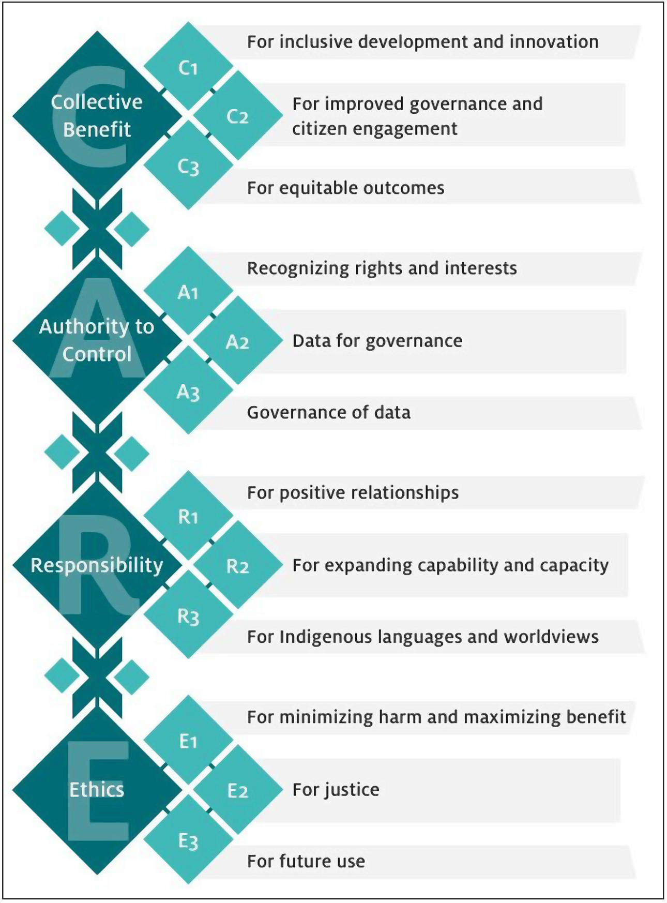

Introducing CARE and FAIR data principles

CARE
Nānā i ke kumu

Who gets to decide
CARE
Nānā i ke kumu
Māui Hudson
Jane Anderson
Stephanie Carroll
- FAIR for whom? FAIR for only some is not FAIR at all
Implementing CARE with Local Contexts
Indigenous metadata are key for CARE

Implementing CARE with Local Contexts
Open to Collaborate

- Engagement notice
- Indicate a researcher’s or institution’s commitment to CARE principles
- See full information here
Implementing CARE with Local Contexts
Attribution Incomplete

- Disclosure notice
- Indicates that attribution (including provenance and contributors) is incomplete, inaccurate, or missing
- See full information here.
Implementing CARE with Local Contexts
Traditional Knowledge

- Disclosure notice
- Indicates that data representing Traditional Knowledge carry Indigenous rights, protocols, and responsibilities
- See full information here
Implementing CARE with Local Contexts
Biocultural

- Disclosure notice
- Affirms the rights of Indigenous peoples to govern the stewardship of data generated from biological sources within their traditional lands, waters, and territories
- See full information here
Implementing CARE with Local Contexts
Permission Labels

TK Culturally Sensitive (TK CS)
Template Text
This Label is being used to indicate that this material has cultural and/or historical sensitivities. The Label asks for care to be taken when this material is accessed, used, and circulated, especially when materials are first returned or reunited with communities of origin. In some instances, this Label will indicate that there are specific permissions for use of this material required directly from the community itself.

Template Text
This Label is being used to verify that [community name or authorizing party] have consent conditions in place for the use of this information, collections, data, and digital sequence information. [These can be found at ….].
Implementing CARE with Local Contexts
Protocol Labels

Template Text
This material has been designated as being available for non-commercial use. You are allowed to use this material for non-commercial purposes including for research, study, or public presentation and/or online in blogs or non-commercial websites. This Label asks you to think and act with fairness and responsibility towards this material and the original custodians.

Template Text
This Label is being used by [community name or authorizing body] to allow this information, collection, data, and digital sequence information (DSI) to be used for unspecified research purposes. This Label does not provide permission for commercialization activities.
[Optional return of research results statement]
Implementing CARE with Local Contexts
What’s next?
- Getting large supposedly FAIR-compliant data repositories to be CARE
- Local Contexts’ work with GBIF
- Harmonize CARE metadata with existing scientific community metadata standards, e.g., Hutchins et al. (2023)

Implementing CARE with Local Contexts
What’s next?
- Getting journals to integrate CARE metadata
- Hutchins et al. (2023) did it, but not with full journal support

Implementing CARE with Local Contexts
What’s next?
- Getting journals to integrate CARE metadata
- Hutchins et al. (2023) did it, but not with full journal support
- CARE metadata should be right up top with FAIR badges